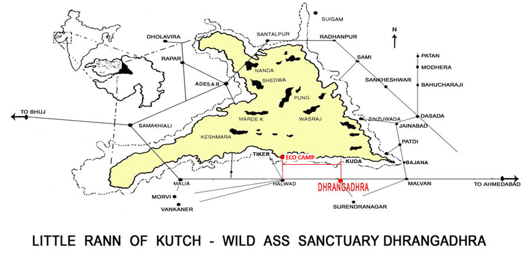

No rain in little rann, eco camp booking close only for this session.
LITTLE RANN OF KUTCH – WILD ASS SANCTUARY
Eco Camp – Jogad (Gujarat) India..
Back To Nature

© 2012 - All Rights Reserved to www.littlerann.com
Sitemap